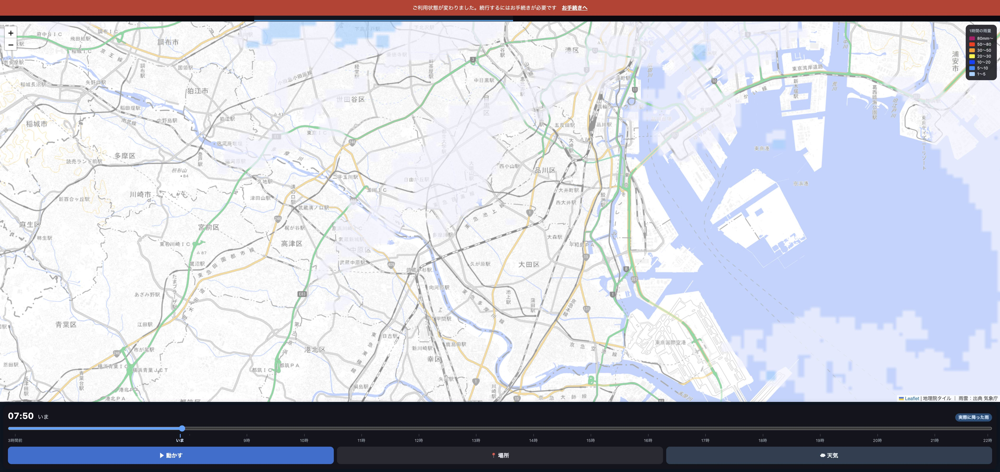

目盛りを
1時間ごと
にしました
下のバーが地図に重なっていたのも直しました。
目盛り
先は
何時なのか
がそのまま読めます。
前
3時間前
いま
3時間後
6時間後
9時間後
12時間後
いま
3時間前
いま
11時
14時
17時
20時
細い線が1時間ごと。字は混まない範囲で出します（広い画面なら全部の時刻が出ます）
下のバー
地図の上に
乗っかって
いました。
前
時間バー
↓ 地図の下105pxを覆っていた
出典の表示も隠れていた
→
いま
地図（ぜんぶ見える）
時間バー
重ねるのをやめて、地図の下に並べました
下の黒い帯も消しました。
他のページ用の余白（64px）がこのページにも入っていて、画面の下に黒く残っていました。
実際の画面

地図の右下に出典（地理院タイル／雨雲：出典 気象庁）も見えています
まとめ
先の目盛りは
1時間ごと
。何時のことか直接読めます。
下のバーは地図に
重なりません
。
画面下の黒い帯も消えました。
本番に出しました。
テスト1210件すべて通っています。